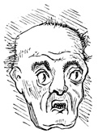
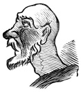

Fancy sketch

A worthy Cit

A Grey Friar
Transcriber 's Note :
Obvious typographical errors have been corrected . Inconsistent spelling and hyphenation in the original document have been preserved .
On page 204 , `` couch '' should possibly be `` conch '' .
On page 345 , the quote should probably read `` ut melior vir '' ...
LONDON : PRINTED BY
SPOTTISWOODE AND CO. , NEW-STREET SQUARE
AND PARLIAMENT STREET
THACKERAYANA
NOTES AND ANECDOTES
Illustrated by Hundreds of Sketches
BY
WILLIAM MAKEPEACE THACKERAY
Depicting Humorous Incidents in his School Life , and Favourite Scenes and Characters in the Books of his Every-day Reading
A NEW EDITION
London
CHATTO
WINDUS , PICCADILLY
A LARGE portion of the public , and especially that smaller section of the community , the readers of books , will not easily forget the shock , as universal as it was unexpected , which was produced at Christmas , 1863 , by the almost incredible intelligence of the death of William Makepeace Thackeray . The mournful news was repeated at many a Christmas table , that he , who had led the simple Colonel Newcome to his solemn and touching end , would write no more . The circumstance was so startling from the suddenness of the great loss which society at large had sustained , that it was some time before people could realize the dismal truth of the report .
It will be easily understood , without elaborating on so saddening a theme , with how much keener a blow this heavy bereavement must have struck the surviving relatives of the great novelist . It does not come within our province to speak of the paralysing effect of such emotion ; it is sufficient to recall that Thackeray 's death , with its overwhelming sorrow , left , in the hour of their trial , his two young daughters deprived of the fatherly active mind which had previously shielded from them the graver responsibilities of life , with the additional anxiety of being forced to act in their own interests at the very time such exertions were peculiarly distracting .
It may be remembered that the author of ` Vanity Fair ' had but recently erected , from his own designs , the costly and handsome mansion in which he anticipated passing the mellower years of his life ; a dwelling in every respect suited to the high standing of its owner , and , as has been said by a brother writer , ` worthy of one who really represented literature in the great world , and who , planting himself on his books , yet sustained the character of his profession with all the dignity of a gentleman . '
In such a house a portion of Thackeray 's fortune might be reasonably invested . To the occupant it promised the enjoyment he was justified in anticipating , and was a solid property to bequeath his descendants when age , in its sober course , should have called him hence . But little more than a year later , to those deadened with the effects of so terrible a bereavement as their loss must have proved when they could realize its fulness , this house must have been a source of desolation . Its oppressive size , its infinitely mournful associations , the hopeful expectations with which it had been erected , the tragic manner in which the one dearest to them had there been stricken down ; with all this acting on the sensibilities of unhealed grief , the building must have impressed them with peculiar aversion ; and hence it may be concluded that their first desire was to leave it . The removal to a house of dimensions more suitable to their requirements involved the sacrifice of those portions of the contents of the larger mansion with which it was considered expedient to dispense ; and thus Messrs. Christie , Manson , and Woods announced for sale a selection from the paintings , drawings , part of the interesting collection of curious porcelain , and such various objects of art or furniture as would otherwise have necessitated the continuance of a house as large as that at Palace Green . These valuable objects were accordingly dispersed under the hammer , March 16 and 17 , 1864 , and on the following day the remainder of Thackeray 's library was similarly offered to public competition . To anyone familiar with Thackeray 's writings , and more especially with his Lectures and Essays , this collection of books must have been both instructive and fascinating ; seeing that they faithfully indicated the course of their owner 's readings , and through them might be traced many an allusion or curious fact of contemporaneous manners , which , in the hands of this master of his craft , had been felicitously employed to strengthen the purpose of some passage of his own compositions .
Without converting this introduction into a catalogue of the contents of Thackeray 's library it is difficult to particularise the several works found on his book-shelves . It is sufficient to note that all the authorities which have been quoted in his Essays were fitly represented ; that such books , in many instances obscure and trivial in themselves , as threw any new or curious light upon persons or things -- on the private and individual , as well as the public or political history of men , and of the events or writings to which their names owe notoriety , of obsolete fashions or of the changing customs of society -- were as numerous as the most ardent and dilettanti of Thackeray 's admirers could desire .
The present volume is devised to give a notion , necessarily restricted , of certain selections from these works , chiefly chosen with a view of further illustrating the bent of a mind , with the workings of which all who love the great novelist 's writings may at once be admitted to the frankest intercourse . It has been truly said that Thackeray was ` too great to conceal anything . ' The same candor is extended to his own copies of the books which told of times and company wherein his imagination delighted to dwell ; for , pencil in hand , he has recorded the impressions of the moment without reserve , whether whimsical or realistic .
A collection of books of this character is doubly interesting . On the one hand were found the remnants of earlier humourists , the quaint old literary standards which became , in the hands of their owner , materials from which were derived the local coloring of the times concerning which it was his delightful fancy to construct romances , to philosophise , or to record seriously .
On the other hand , the present generation was fitly represented . To most of the writers of his own era it was an honor that a presentation copy of their literary offspring should be found in the library of the foremost author , whose friendship and open-handed kindness to the members of his profession was one of many brilliant traits of a character dignified by innumerable great qualities , and tenderly shaded by instances uncountable of generous readiness to confer benefits , and modest reticence to let the fame of his goodness go forth .
Presentation copies from his contemporaries were therefore not scarce ; and whether the names of the donors were eminent , or as yet but little heard of , the creatures of their thoughts had been preserved with unvarying respect . The ` Christmas Carol , ' that memorable Christmas gift which Thackeray has praised with fervor unusual even to his impetuous good-nature , was one of the books . The copy , doubly interesting from the circumstances both of its authorship and ownership , was inscribed in the well-known hand of that other great novelist of the nineteenth century , ` W. M. Thackeray , from Charles Dickens -LRB- whom he made very happy once a long way from home -RRB- . ' Competition was eager to secure this covetable literary memorial , which may one day become historical ; it was knocked down at 25 l. 10 s. , and rumor circulated through the press , without foundation , we believe with regret , that it had been secured for the highest personage in the State , whose desire to possess this volume would have been a royal compliment to the community of letters .
Nor were books with histories wanting . George Augustus Sala , in the introduction to his ingenious series of ` Twice Round the Clock , ' published in 1862 , remarks with diffidence : ` It would be a piece of sorry vanity on my part to imagine that the conception of a Day and Night in London is original . I will tell you how I came to think of the scheme of `` Twice Round the Clock . '' Four years ago , in Paris , my then master in literature , Mr. Charles Dickens , lent me a little thin octavo volume , which I believe had been presented to him by another master of the craft , Mr. Thackeray . ' A slight resemblance to this opuscule was offered in ' A View of the Transactions of London and Westminster from the Hours of Ten in the Evening till Five in the Morning , ' which was secured at Thackeray 's sale for forty-four shillings .
Thus , without presuming to any special privileges , we account for the selection of literary curiosities which form settings for the fragments gathered in ` Thackerayana , ' The point of interest which rendered this dispersion of certain of Thackeray 's books additionally attractive to us may be briefly set forth .
In looking through the pages of odd little volumes , and on the margins and fly-leaves of some of the choicest works , presentation copies or otherwise , it was noticed that pencil or pen-and-ink sketches , of faithful conceptions suggested by the texts , touched in most cases with remarkable neatness and decision , were abundantly dispersed through various series .
It is notorious that their owner 's gift of dexterous sketching was marvellous ; his rapid facility , in the minds of those critics who knew him intimately , was the one great impediment to any serious advancement in those branches of art which demand a lengthy probationship ; and to this may be referred his implied failure , or but partial success , in the art which , to him , was of all cultivated accomplishments the most enticing . The fact has been dwelt on gravely by his friends , and was a source of regret to certain eminent artists best acquainted with his remarkable endowments .
The chance of securing as many of these characteristic designs as was in our power directed the selection of books which came into our possession in consequence of the sale of Thackeray 's library ; it was found they were richer in these clever pencillings than had been anticipated .
An impulse thus given , the excitement of increasing the little gathering was carried further ; many volumes which had been dispersed were traced , or were offered spontaneously when the fact of the collection became known . From books wherein , pencil in hand , passages had been noted with sprightly little vignettes , not unlike the telling etchings which the author of ` Vanity Fair ' caused to be inserted in his own published works , we became desirous of following the evidence of this faculty through other channels ; seeing we held the Alpha , as it were , inserted in the Charterhouse School books , and the later pencillings , which might enliven any work of the hour indifferently , as it excited the imagination , grotesque or artist-like , as the case might be , of the original reader , whether the book happened to be a modest magazine in paper or an édition de luxe in morocco .
A demand created , the supply , though of necessity limited , was for a time forthcoming . The energy , which fosters a mania for collecting , was aided by one of those unlooked-for chances which sustain such pursuits , and , from such congenial sources as the early companions of the author , sufficient material came into our possession to enable us to trace Thackeray 's graphic ambition throughout his career with an approach to consistency , following his efforts in this direction through his school days , in boyish diversions , and among early favorites of fiction ; as an undergraduate of Cambridge ; on trips to Paris ; as a student at Weimar and about Germany ; through magazines , to Paris , studying in the Louvre ; to Rome , dwelling among artists ; through his contributions to ` Fraser 's , ' and that costly abortive newspaper speculation the ` Constitutional ; ' through the slashing Bohemian days , to the period of ` Vanity Fair ; ' through successes , repeated and sustained -- Lectures and Essays ; through travels at home and abroad -- to America , from Cornhill to Grand Cairo , to Scotland , to Ireland , ` Up the Rhine , ' Switzerland , Italy , Belgium , Holland , and wherever Roundabout ` sketches by the way ' might present themselves .
The study which had attracted an individual , elicited the sympathy of a larger circle . The many who preserve mementos similar to those dispersed through ` Thackerayana ' enlarged on the general interest of the materials , and especially upon the gratification which that part of the public representing Thackeray 's admirers would discover in such original memorials of our eminent novelist ; and which , from the nature of his gifts , and the almost unique propensity for their exercise , would be impossible in the case of almost any other man of kindred genius .
Selections from the sketches were accordingly produced in facsimile , only such subjects being used as , from their relation to the context , derived sufficient coherence to be generally appreciable .
The writer is aware that many such memorials exist , some of them unquestionably of greater worth in themselves than several that are found in the present gathering ; but it is not probable , either from their private nature , the circumstances of their ownership , or from the fact that , in their isolated condition , they do not illustrate any particular stage of their author 's progress , that the public will ever become familiar with them .
` Thackerayana ' is issued with a sense of imperfections ; many more finished or pretentious drawings might have been offered , but the illustrations have been culled with a sense of their fitness to the subject in view . It is the intention to present Thackeray in the aspect his ambition preferred -- as a sketcher ; his pencil and pen bequeath us matter to follow his career ; we recognize that delightful gift , a facility for making rapid little pictures on the inspiration of the moment ; it is an endless source of pleasure to the person who may exercise this faculty , and treasures up the most abundant and life-like reminiscences for the delectation of others . It will be understood as no implied disparagement of more labored masterpieces if we observe that the composition of historical works , the conception and execution of chefs-d'œuvre , are grave , lengthy , and systematic operations , not to be lightly intruded on ; they involve much time and preparation , many essays , failures , alterations , corrections , much grouping of accessories , posing of models , and setting of lay-figures ; they become oppressive after a time , and demand a strain of absorption to accomplish , and an effort of mind to appreciate , which are not to be daily exerted ; long intervals are required to recruit after such labors ; but the bright , ready croquis of the instant , if not profound , embalms the life that is passing and incessant ; the incident too fleeting to be preserved on the canvas , or in a more ambitious walk of the art , lives in the little sketch-book ; it is grateful to the hand which jots it down , and has the agreeable result of being able to extend that pleasure to all who may glance therein . If it was one of Thackeray 's few fanciful griefs that he was not destined for a painter of the grand order , it doubtless consoled him to find that the happier gift of embodying that abstract creation -- an idea -- in a few strokes of the pencil was his beyond all question ; and this graceful faculty he was accustomed to exercise so industriously , that myriads of examples survive of the originality of his invention as an artist , in addition to the brilliant fancy and sterling truth to be found in his works as an author .
| CHAPTER I. | |
| PAGE | |
| Voyage from India -- Touching at St. Helena -- School days at the Charterhouse -- Early Reminiscences -- Sketches in School Books -- Boyish Scribblings -- Favourite Fictions -- Youthful Caricatures -- Souvenirs of the Play | 1 |
| CHAPTER II . | |
| Early Favourites -- The ` Castle of Otranto ' -- Rollin 's ` Ancient History ' | 18 |
| CHAPTER III . | |
| Thackeray 's last visit to the Charterhouse -- College days -- Pendennis at Cambridge -- Sketches of Universities -- Sporting subjects -- Etchings at Cambridge -- Pencillings in old authors -- Pictorial Puns -- The ` Snob , ' a Literary and Scientific Journal -- ` Timbuctoo , ' a Prize Poem | 47 |
| CHAPTER IV . | |
| Early Favourites -- Fielding 's ` Joseph Andrews ' -- Imitators of Fielding -- The ` Adventures of Captain Greenland ' -- ` Jack Connor ' -- ` Chrysal ; or , the Adventures of a Guinea ' | 71 |
| CHAPTER V. | |
| Continental Rambles -- A Stolen Trip to Paris -- Residence at Weimar -- Contributions to Albums -- Burlesque State -- German Sketches and Studies -- The Weimar Theatre -- Goethe -- Souvenirs of the Saxon city -- ` Journal kept during a Visit to Germany ' | 89 |
| CHAPTER VI . | |
| Thackeray 's Predilections for Art -- A Student in Paris -- First Steps in the Career -- An Art Critic -- Introduction to Marvy 's ` English Landscape Painters ' -- Early Connection with Literature -- Michael Angelo Titmarsh , a contributor to ` Fraser 's Magazine ' -- French Caricature under Louis Philippe -- Political Satires -- A Young Artist 's life in Paris -- Growing Sympathy with Literature | 114 |
| CHAPTER VII . | |
| ` Elizabeth Brownrigge : a Tale , ' 1832 -- ` Comic Magazine , ' 1832-4 -- ` National Standard and Literary Representative , ' 1833-4 -- ` Flore et Zéphyr , Ballet Mythologique , ' 1836 -- On the Staff of ` Fraser 's Magazine ' -- Early Connection with Maginn and his Colleagues -- The Maclise Cartoon of the Fraserians -- Thackeray 's Noms de Plume -- Charles Yellowplush as a Reviewer -- Skelton and his ` Anatomy of Conduct ' -- Thackeray 's Proposal to Dickens to illustrate his Novels -- Gradual Growth of Thackeray 's Notoriety -- His Genial Admiration for ` Boz ' -- Christmas Books and Dickens 's ` Christmas Carol ' -- Return to Paris -- Execution of Fieschi and Lacénaire -- Daily Newspaper Venture -- The ` Constitutional ' and ` Public Ledger ' -- Thackeray as Paris Correspondent -- Dying Speech of the ` Constitutional ' -- Thackeray 's Marriage -- Increased Application to Literature -- The ` Shabby Genteel Story ' -- Thackeray 's Article in the ` Westminster ' on George Cruikshank -- First Collected Writings -- The ` Paris Sketch-Book ' -- Dedication to M. Aretz -- ` Comic Tales and Sketches , ' with Thackeray 's original Illustrations -- The ` Yellowplush Papers ' -- The ` Second Funeral of Napoleon , ' with the ` Chronicles of the Drum ' -- The ` History of Samuel Titmarsh and the great Hoggarty Diamond ' -- ` Fitzboodle 's Confessions ' -- The ` Irish Sketch-Book , ' with the Author 's Illustrations -- The ` Luck of Barry Lyndon ' -- Contributions to the ` Examiner ' -- Miscellanies -- ` Carmen Lilliense ' -- ` Notes on a Journey from Cornhill to Grand Cairo , ' with the Author 's Illustrations -- Interest excited in Titmarsh -- Foundation of ` Punch ' -- Thackeray 's Contributions -- His comic Designs -- The ` Fat Contributor ' -- ` Jeames 's Diary ' | 124 |
| CHAPTER VIII . | |
| Increasing reputation -- Later writings in ` Fraser ' -- ` Mrs. Perkins 's Ball , ' with Thackeray 's Illustrations -- Early Vicissitudes of ` Pencil Sketches of English Society ' -- Thackeray 's connection with the Temple -- Appearance of ` Vanity Fair , ' with the Author 's original Illustrations -- Appreciative notice in the ` Edinburgh Review ' -- The impression produced -- ` Our Street , ' with Titmarsh 's Pencillings of some of its Inhabitants -- The History of Pendennis , ' illustrated by the Author -- ` Dr. Birch and his Young Friends , ' with illustrations by M. A. Titmarsh -- ` Rebecca and Rowena ' -- The Dignity of Literature and the ` Examiner ' and ` Morning Chronicle ' newspapers -- Sensitiveness to Hostile Criticism -- The ` Kickleburys on the Rhine , ' with illustrations by M. A. Titmarsh -- Adverse bias of the ` Times ' newspaper -- Thackeray 's reply -- An ` Essay on Thunder and Small Beer ' | 161 |
| CHAPTER IX . | |
| Commencement of the Series of Early Essayists -- Thackeray as a Lecturer -- The ` English Humourists of the Eighteenth Century ' -- Charlotte Brontë at Thackeray 's Readings -- The Lectures repeated in Edinburgh -- An invitation to visit America -- Transatlantic popularity -- Special success attending the reception of the ` English Humourists ' in the States -- ` Week-day Preachers ' -- Enthusiastic Farewell -- Appleton 's New York edition of Thackeray 's Works ; the Author 's introduction , and remarks on International Copyright -- Thackeray 's departure -- Cordial impression bequeathed to America -- The ` History of Henry Esmonde , a story of Queen Anne 's Reign ' -- The writers of the Augustan Era -- The ` Newcomes ' -- An allusion to George Washington misunderstood -- A second visit to America -- Lectures on the ` Four Georges ' -- The series repeated at home -- Scotch sympathy -- Thackeray proposed as a candidate to represent Oxford in Parliament -- His liberal views and impartiality | 171 |
| CHAPTER X. | |
| Curious Authors from Thackeray 's Library , indicating the course of his Readings -- Early Essayists illustrated with the Humourist 's Pencillings -- Bishop Earle 's ` Microcosmography ; a piece of the World Characterised , ' 1628 -- An ` Essay in Defense of the Female Sex , ' 1697 -- Thackeray 's Interest in Works on the Spiritual World -- ` Flagellum Dæmonum , et Fustis Dæmonum . Auctore R. P. F. Hieronymo Mengo , ' 1727 -- ` La Magie et L'Astrologie , ' par L. F. Alfred Maury -- ` Magic , Witchcraft , Animal Magnetism , Hypnotism , and Electro Biology , ' by James Baird , 1852 | 186 |
|
CHAPTER XI .
ENGLISH ESSAYISTS OF THE GEORGIAN ERA . |
|
| Early Essayists whose Writings have furnished Thackeray with the Accessories of Portions of his Novels and Lectures -- Works from the Novelist 's Library , elucidating his Course of Reading for the Preparation of his ` Lectures ' -- ` Henry Esmond , ' ` The Virginians , ' c. -- Characteristic Passages from the Lucubrations of the Essayists of the Augustan Era illustrated with original Marginal Sketches , suggested by the Text , by Thackeray 's hand -- The ` Tatler ' -- Its History and Influence -- Reforms introduced by the purer Style of the Essayists -- The Literature of Queen Anne 's Reign -- Thackeray 's Love for the Writings of the Period -- His Gift of reproducing their masterly and simple style of Composition ; their Irony , and playful Humour -- Extracts from notable Essays ; illustrated with original Pencillings from the Series of the ` Tatler , ' 1709 | 221 |
|
CHAPTER XII .
THACKERAY 'S RESEARCHES AMONGST THE WRITINGS OF THE EARLY ESSAYISTS -- Continued . |
|
| Extracts of Characteristic Passages from the Works of the ` Humourists , ' from Thackeray 's Library , illustrated with Original Marginal Sketches by the Author 's hand -- The Series of The ` Guardian , ' 1713 -- Introduction -- Steele 's Programme -- Authors who contributed to the ` Guardian ' -- Paragraphs and Pencillings | 275 |
|
CHAPTER XIII .
THACKERAY 'S RESEARCHES AMONGST THE WRITINGS OF THE EARLY ESSAYISTS -- Continued . |
|
| Characteristic passages from the Works of Humorous Writers of the ` Era of the Georges , ' from Thackeray 's Library , illustrated with original Marginal Sketches by the Author 's hand -- The ` Humourist , ' 1724 -- Extracts and Pencillings | 299 |
|
CHAPTER XIV .
THACKERAY 'S RESEARCHES AMONGST THE WRITINGS OF THE EARLY ESSAYISTS -- Continued . |
|
| Characteristic Passages from the Works of the ` Humourists , ' from Thackeray 's Library , illustrated by the Author 's hand , with Marginal Sketches suggested by the Text -- The ` World , ' 1753 -- Introduction -- Its Difference from the Earlier Essays -- Distinguished Authors who contributed to the ` World ' -- Paragraphs and Pencillings | 318 |
|
CHAPTER XV .
THACKERAY 'S FAMILIARITY WITH THE WRITINGS OF THE SATIRICAL ESSAYISTS -- Continued . |
|
| Characteristic Passages from the compositions of the ` Early Humourists , ' from Thackeray 's Library , illustrated by the Author 's hand with original Marginal Sketches suggested by the Text -- The ' Connoisseur , ' 1754 -- Introduction -- Review of Contributors -- Paragraphs and Pencillings | 357 |
|
CHAPTER XVI .
THACKERAY 'S RESEARCHES AMONGST THE WRITINGS OF THE EARLY ESSAYISTS -- Continued . |
|
| Characteristic Passages from the Works of the ` Humourists , ' from Thackeray 's Library ; illustrated by the Author 's hand with Marginal Sketches suggested by the Text -- The ` Rambler , ' 1749-50 -- Introduction -- Its Author , Dr. Johnson -- Paragraphs and Pencillings | 370 |
|
CHAPTER XVII .
THACKERAY 'S FAMILIARITY WITH THE WRITINGS OF THE SATIRICAL ESSAYISTS -- Continued . |
|
| Characteristic Passages from the Works of the ` Early Humourists , ' from Thackeray 's Library , illustrated by the Author 's hand with original Marginal Sketches suggested by the Text -- The ' Mirror , ' Edinburgh , 1779-80 -- Introduction -- The Society in which the ' Mirror , ' and ` Lounger ' originated -- Notice of Contributors -- Paragraphs and Pencillings | 408 |
| CHAPTER XVIII . | |
| Thackeray as an Illustrator -- The ` North British Review ' on Thackeray -- Illustrations to ` Men of Character ' -- ` The Whitey-brown Paper Magazine ' -- ` Comic Tales , ' illustrated by Thackeray -- Allusions to Caricature Drawing found throughout his writings -- Skits on Fashion -- Titmarsh on ` Men and Clothes ' -- Bohemianism in youth -- Hatred of Conventionality -- Sketches of Contemporary Habits and Manners -- Imaginative Illustrations to Romances -- Skill in Ludicrous Parody -- Burlesque of the ` Official Handbook of Court and State ' | 436 |
| CHAPTER XIX . | |
| Thackeray as a Traveller -- Journey in Youth from India to England -- Little Travels at Home -- Sojourn in Germany -- French Trips -- Residence in Paris -- Studies in Rome -- Sketches and Scribblings in Guide-Books -- Little Tours and Wayside Studies -- Brussels -- Ghent and the Béguines -- Bruges -- Croquis in Murray 's ` Handbooks to the Continent ' -- Up the Rhine -- ` From Cornhill to Grand Cairo ' -- Journeys to America -- Switzerland -- ' A Leaf out of a Sketch-Book ' -- The Grisons -- Verona -- ` Roundabout Journeys ' -- Belgium and Holland | 465 |
| CHAPTER XX . | |
| Commencement of the ` Cornhill Magazine ' -- ` Roundabout Papers ' -- ` Lovel the Widower ' -- The ` Adventures of Philip on his Way through the World ' -- Lectures on the ` Four Georges ' -- Editorial Penalties -- The ` Thorn in the Cushion ' -- Harass from disappointed Contributors -- Vexatious Correspondents -- Withdrawal from the arduous post of Editor -- Building of Thackeray 's House in Kensington Palace Gardens -- Christmas 1863 -- Death of the great Novelist -- The unfinished Work -- Circumstances of the Author 's last Illness -- His Death | 488 |
THACKERAYANA .
Voyage from India -- Touching at St. Helena -- School days at the Charterhouse -- Early Reminiscences -- Sketches in School Books -- Boyish Scribblings -- Favourite Fictions -- Youthful Caricatures -- Souvenirs of the Play .
View of Life as seen through the Charterhouse Gates
The fondness of Thackeray for lingering amidst the scenes of a boy 's daily life in a public grammar school , has generally been attributed to his early education at the Charterhouse , that celebrated monastic-looking establishment in the neighborhood of Smithfield , which he scarcely disguised from his readers as the original of the familiar ` Greyfriars ' of his works of fiction . Most of our novelists have given us in various forms their school reminiscences ; but none have produced them so frequently , or dwelt upon them with such manifest bias towards the subject , as the author of ` Vanity Fair , ' ` The Newcomes , ' and ` The Adventures of Philip . ' It is pleasing to think that this habit , which Thackeray was well aware had been frequently censured by his critics as carried to excess , was , like his partiality for the times of Queen Anne and the Georges , in some degree due to the traditional reverence of his family for the memory of their great-grandfather , Dr. Thomas Thackeray , the well-remembered head-master of Harrow .
An Exile
A Sentry
Sketches of Indian life and Anglo-Indians generally are abundantly interspersed through Mr. Thackeray 's writings , but he left India too early to have profited much by Indian experiences . He is said , however , to have retained so strong an impression of the scene of his early childhood , as to have wished in later life to revisit it , and recall such things as were still remembered by him . In his seventh year he was sent to England , and when the ship touched at St. Helena , he was taken up to have a glimpse of Bowood , and there saw that great Captain at whose name the rulers of the earth had so often trembled . It is remarkable that in his little account of the second funeral of Napoleon , which he witnessed in Paris in 1840 , no allusion to this fact appears ; but he himself has described it in one of his latest works -- the lectures on ` The Four Georges , ' first delivered in the United States in 1855-56 , and afterwards described by the Athenæum as ` an airy , humorous , and brilliant picture of English life and manners , produced by honest reading out of many books , and lighted with the glow of individual sympathy and intellect . '
A highly respectable Member of Society
A Master of Arts
We fancy that Thackeray was placed under the protection of his grandfather , William Makepeace Thackeray , who had settled with a good fortune , the fruit of his industry in India , at Hadley , near Chipping Barnet , a little village , in the churchyard of which lies buried the once-read Mrs. Chapone , the authoress of the ` Letters on the Improvement of the Mind , ' the correspondent of Richardson , and the intimate friend of the learned Mrs. Carter and other blue-stocking ladies of that time .
A Man of Letters
In the course of time -- we believe in his twelfth year -- Thackeray was sent to the Charterhouse School , and remained there as a boarder in the house of Mr. Penny . He appears in the Charterhouse records for the year 1822 as a boy on the tenth form . In the next year we find him promoted to the seventh form ; in 1824 to the fifth ; and in 1828 , when he had become a day-boy , or one residing with his friends , we find him in the honorable positions of a first-form boy and one of the monitors of the school . He was , however , never chosen as one of the orators , or those who speak the oration on the Founder 's Day , nor does he appear among the writers of the Charterhouse odes , which have been collected and printed from time to time in a small volume . We need feel no surprise that Thackeray 's ambition did not lead him to seek this sort of distinction ; like most keen humorists , he preferred exercising his powers of satire in burlesquing these somewhat trite compositions to contributing seriously to swell their numbers . Prize poems ever yielded the novelist a delightful field for his sarcasms .
Early efforts at Drawing
While pursuing his studies at ` Smiffle , ' as the Carthusians were pleased to style ` Greyfriars , ' Thackeray gave abundant evidences of the gifts that were in him . He scribbled juvenile verses , towards the close of his school days , displaying taste for the healthy sarcasm which afterwards became one of his distinctive qualities , at the expense of the prosaic compositions set down as school verses . In one of his class books , ` Thucydides , ' with his autograph , ` Charter House , 1827 , ' are scribbled two verses in which the tender passion is treated somewhat realistically : --
Love 's like a mutton chop ,
Soon it grows cold ;
All its attractions hop
Ere it grows old .
Love 's like the cholic sure ,
Both painful to endure ;
Brandy 's for both a cure ,
So I 've been told .
When for some fair the swain
Burns with desire ,
In Hymen 's fatal chain
Eager to try her ,
He weds as soon as he can ,
And jumps -- unhappy man --
Out of the frying pan
Into the fire .
As to the humorist 's pencil , even throughout these early days , it must have been an unfailing source of delight , not only to the owner but to the companions of his form . ` Draw us some pictures , ' the boys would say ; and straightway down popped a caricature of a master on slate or exercise paper . Then school books were brought into requisition , and the fly-leaves were adorned with whimsical travesties of the subjects of their contents . Abbé Barthélemy 's ` Travels of Anacharsis the Younger ' suggested the figure of a wandering minstrel , with battered hat and dislocated flageolet , piping his way through the world in the dejected fashion in which those forlorn pilgrims might have presented themselves to the charitable dwellers in Charterhouse Square ; while Anacharsis , Junior , habited in classic guise , was sent -LRB- pictorially -RRB- tramping the high road from Scythia to Athens , with stick and bundle over his back , a wallet at his side , sporting a family umbrella of the defunct ` gingham ' species as a staff , and furnished with lace-up hob-nailed boots of the shape , size , and weight popularly approved by navvies .
' A Gingham '
Then Ainsworth 's Latin Dictionary was turned into a sketch book , and supplemented with studies of head-masters , early conceptions of Roman warriors , primitive Carthusians indulging disrespectful gestures , known as ` sights , ' at the rears of respectable governors , and boys of the neighbouring ` blue coat ' foundation , their costume completed with the addition of a fool 's or dunce 's long-eared cap .
Fantastic designs , even when marked by the early graphic talent which Thackeray 's rudest scribblings display , are apt to entail unpleasant consequences when discovered in school-books , and greater attractions were held out by works of fiction .
In a state of suspense
Pages of knight-errantry were the things for inspiration : Quixote , Orlando Furioso , Valentine and Orson , the Seven Champions , Cyrus the Grand -LRB- and interminable -RRB- , mystic and chivalrous legends , quite forgotten in our generation , but which , in Thackeray 's boyhood , were considered fascinating reading ; -- quaint romances , Italian , Spanish , and Persian tales , familiar enough in those days , and oft referred to , with accents of tender regret , in the reminiscences of the great novelist . What charms did the ` Arabian Nights ' hold out for his kindling imagination , -- how frequently were its heroes and its episodes brought in to supply some apt allusion in his later writings ! It seems that Thackeray 's pencil never tired of his favorite stories in the ` Thousand and One Nights , ' precious to him for preserving ever green the impressions of boyhood . How numerous his unpublished designs from these tales , those who treasure his numberless and diversified sketches can alone tell . We see the thrilling episode of ` Ali Baba ' perched among the branches , while the robbers bear their spoil to the mysterious cave , repeated with unvarying interest , and each time with some fresh point of humor to give value to the slight tracings .
Blueskin
` Make us some faces , ' his school-companions would cry . ` Whom will you have ? name your friends , ' says the young artist . Perhaps one young rogue , with a schoolboy 's taste for personalities , will cry , ` Old Buggins ; ' and the junior Buggins blushes and fidgets as the ideal presentment of his progenitor is rapidly dashed off and held up to the appreciation of a circle of rapturous critics . ` Now , ' says the wounded youngster , glad to retaliate , ` you remember old Figgins ' pater when he brought Old Figs back and forgot to tip -- draw him ! ' and a faithful portraiture of that economic civic ornament is produced from recollection .
The gallery of family portraits is doubtless successfully exhausted , and each of the boys who love books , calls for a different favorite of fiction , or the designer exercises his budding fancy in summoning monks , Turks , ogres , bandits , highwaymen , and other heroes , traditional or imaginary , from that wonderful well of his , which , in after years , was to pour out so frankly from its rich reservoirs for the recreation , and improvement too , of an audience more numerous , but perhaps less enthusiastic , than that which surrounded him at Greyfriars .